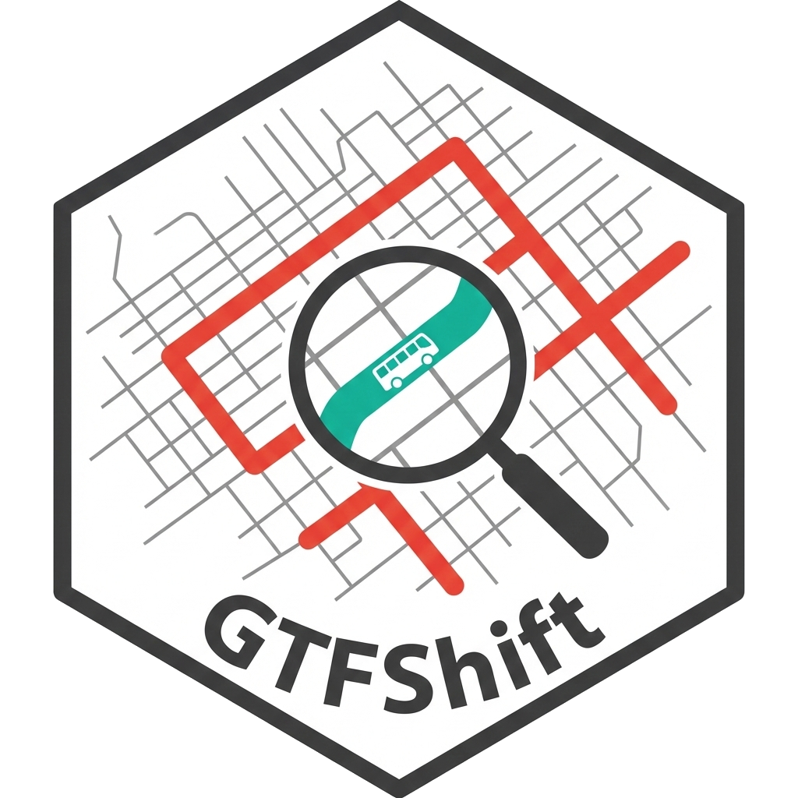

Prioritize road network lanes for bus lane implementation
Source:R/prioritize_lanes.R
prioritize_lanes.RdFor each OSM way with GTFS service, aggregates its characteristics to assist in the bus lane implementation prioritization
Usage
prioritize_lanes(
gtfs,
q,
date = GTFShift::calendar_nextBusinessWednesday(),
keep_osm_attributes = FALSE
)Arguments
- gtfs
tidygtfs. GTFS feed.
- q
osmdata::opq. Overpass query for transit network, to obtain OSM route ways, using
GTFShift::osm_shapes_to_routes().- date
Date (Default
GTFShift::calendar_nextBusinessWednesday()). Reference date to consider when analyzing the GTFS file.- keep_osm_attributes
Boolean (Default FALSE). Whether to keep all OSM way attributes in the output
sfobject.
Value
An sf data.frame object with the following columns:
way_osm_id, theosm_idattribute from OSM way.hour, the hour for which the frequency applies (24 hour format).frequency, the number of services for the route that depart from the first stop for the corresponding 60 minutes period.is_bus_lane, whether the way has a bus lane.n_lanes, the total number of lanes.n_directions, the number of travel directions.n_lanes_direction, the number of lanes per direction.routes, the list of route_ids that use the way, separated by semicolon.geometry, the route shape.(if
keep_osm_attributes = TRUE) all OSM way attributes.
Details
This method analyses the GTFS feed for a representative day, returning a data.frame with the road segments where transit routes run and for each, a set of parameters that can be used to prioritize bus lane implementations.
Its functionality is a bundle that encapsulates the logic of several methods from the package,
including GTFShift::get_way_frequency_hourly() and GTFShift::osm_bus_lanes(), that can be used separately if needed.
Mind that this method uses GTFShift::get_way_frequency_hourly() to match routes with OSM ways, which requires that the
OSM relation mapping is well defined for the transit routes. Routes that do not have an OSM match are ignored.
Examples
if (FALSE) { # \dontrun{
gtfs = GTFShift::load_feed("gtfs.zip")
q = opq(bbox=sf::st_bbox(tidytransit::shapes_as_sf(gtfs$shapes))) |> add_osm_feature(key = "route", value = "bus")
lanes_analysis = GTFShift::prioritize_lanes(gtfs, q)
} # }